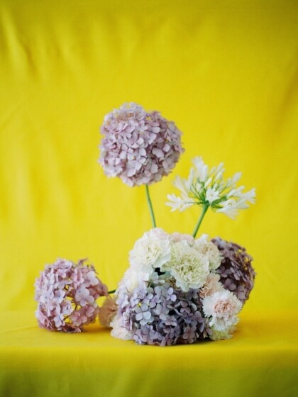

Tallos sumergidos
Apenas lleguen a casa, sumerge los tallos por al menos dos horas para que se recuperen del traslado. Asegúrate que todos los tallos queden bien sumergidos.
Fuera hojas!
Asegúrate que los tallos que queden sumergidos no tengan hojas ya que estas pueden acelerar el proceso de deterioro de las flores.
Corta los tallos
Si cortas los tallos cada tres días puedes alargar la vida de las flores. Procura usar una tijera de podar u otra herramienta de jardinería. Corta cada tallo unos dos centímetros por encima de su base.
Cambia el agua
Cada 2 o 4 días cámbiales el agua, aprovecha esta oportunidad para lavar muy bien tu florero.